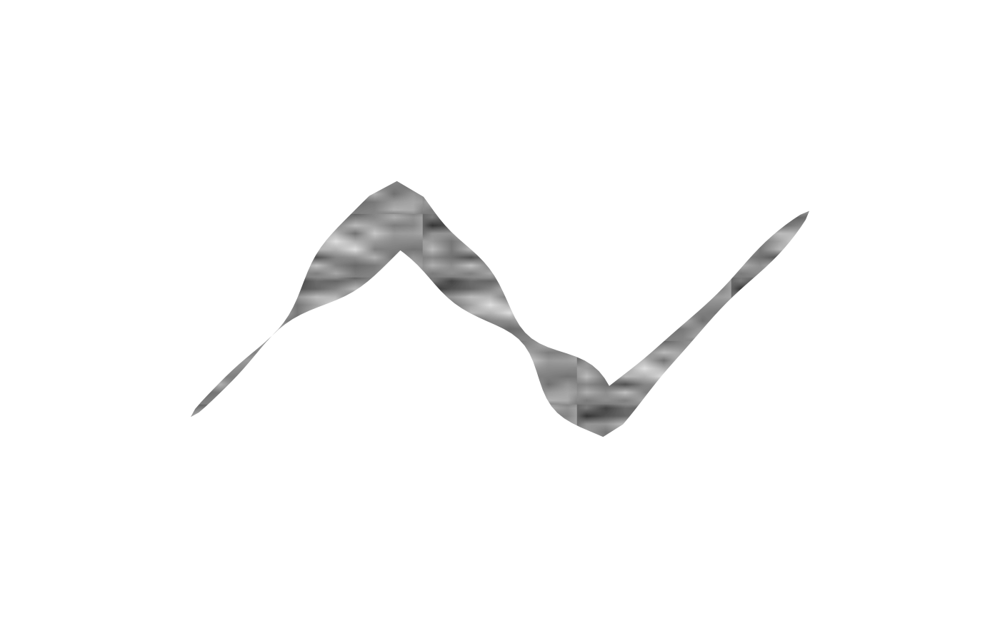
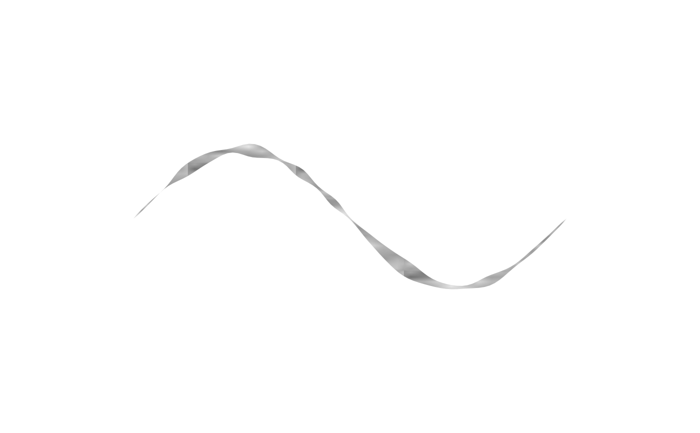

fill_charcoal() is a fill_noise() preset – same field, same
rendering, just different defaults – tuned to read as hand-drawn
charcoal or marker grain rather than fill_noise()'s more
general-purpose rasterized field: a lighter base tone, finer/denser
tiling, and finer noise detail. Found, while prototyping
shape_stroke()'s interior texture, to be a substantially better fit
than fill_scribble() for a curved stroke's body – fill_scribble()'s
fixed horizontal/vertical direction doesn't track a curved path's own
tangent (see the "Deferred: arbitrary angle for fill_scribble()"
item in .agents/PLAN.md), producing hatching that visibly cuts across
the stroke at odd angles wherever the path bends, while
fill_noise()'s directionless mottling has no orientation to clash
with the curve.
Usage
fill_charcoal(
color = "gray15",
spacing = 0.25,
aspect = 1,
resolution = 32L,
alpha = 1,
frequency = 4,
octaves = 3L,
seed = 1L,
extend = "repeat"
)Arguments
- color
Fill colour. Default
"gray15"(lighter thanfill_noise()'s own"black"default, closer to a charcoal tone).- spacing
Baseline tile size, as a fraction of the target's bounding box. Must be a positive number. Default
0.25(finer thanfill_noise()'s own0.5default, for denser grain).- aspect
Width-to-height ratio of the target polygon's bounding box. Must be a positive number. Default
1(a square bounding box).- resolution
Raster resolution (pixels per tile edge). Must be a positive integer of at least
2L. Default32L.- alpha
Maximum opacity, at the noise field's peak. Must be a number in
(0, 1]. Default1.- frequency
Noise frequency, as in
shape_blob(). Must be non-negative. Default4(finer detail thanfill_noise()'s own default of1).- octaves
Number of noise octaves, as in
shape_blob(). Must be a positive integer. Default3L(one more layer of detail thanfill_noise()'s own default of2L).- seed
Integer seed for the noise field, as in
shape_blob(). Default1L.- extend
Passed to
grid::pattern(). Default"repeat".
Value
A pattern object as returned by grid::pattern(), suitable for
use as the fill argument to grid::gpar().
Examples
draw(shape_stroke(
x = c(0, 1, 2, 3), y = c(0, 1, 0, 1), width = 0.4,
fill = fill_charcoal(), color = NA_character_
))

# a lighter tone and a curved backbone -- fill_charcoal()'s directionless
# mottling tracks a bend that fill_scribble()'s fixed direction wouldn't
t <- seq(0, 2 * pi, length.out = 200)
draw(shape_stroke(
x = t, y = sin(t), width = 0.3,
fill = fill_charcoal(color = "gray40"), color = NA_character_
))
